Programming, robotics, traveling
Оригинал https://habrahabr.ru/post/158273/
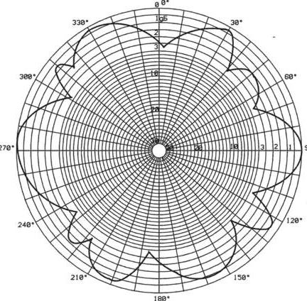
Помимо свойств радиоволн, необходимо тщательно подбирать антенны, для достижения максимальных показателей при приеме/передаче сигнала. Давайте ближе познакомимся с различными типами антенн и их предназначением.
Антенны — преобразуют энергию высокочастотного колебания от передатчика в электромагнитную волну, способную распространяться в пространстве. Или в случае приема, производит обратное преобразование — электромагнитную волну, в ВЧ колебания.
Диаграмма направленности — графическое представление коэффициента усиления антенны, в зависимости от ориентации антенны в пространстве.
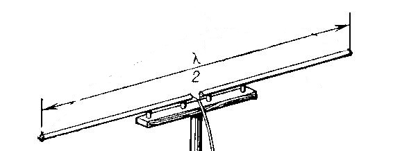
В простейшем случае состоит из двух токопроводящих отрезков, каждый из которых равен 1/4 длины волны.
Широко применяется для приема телевизионных передач, как самостоятельно, так и в составе комбинированных антенн. Так, к примеру, если диапазон метровых волн телепередач проходит через отметку 200 МГц, то длина волны будет равна 1,5 м. Каждый отрезок симметричного вибратора будет равен 0,375 метра.
Диаграмма направленности симметричного вибратора
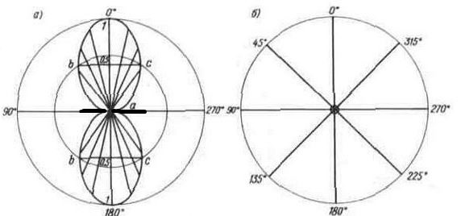
В идеальных условиях, диаграмма направленности горизонтальной плоскости, представляет собой вытянутую восьмерку, расположенную перпендикулярно антенне. В вертикальной плоскости, диаграмма представляет собой окружность. В реальных условиях, на горизонтальной диаграмме присутствуют четыре небольших лепестка, расположенных под углом 90 градусов друг к другу. Из диаграммы можем сделать вывод о том, как располагать антенну, для достижения максимального усиления.
В случае не правильно подобранной длины вибратора, диаграмма направленности примет следующий вид:
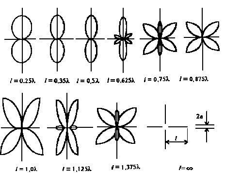
Основное применение, в диапазонах коротких, метровых и дециметровых волн.
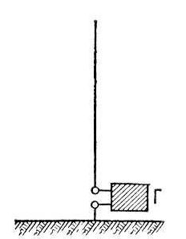
Или попросту штыревая антенна, представляет из себя «половину» симметричного вибратора, установленного вертикально. В качестве длины вибратора, применяют 1, 1/2 или 1/4 длины волны.
Диаграмма направленности следующая:
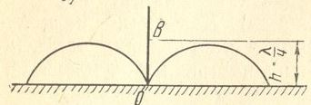
Представляет собой рассеченную вдоль «восьмерку». За счет того, что вторая половина «восьмерки» поглощается землей, коэффициент направленного действия у несимметричного вибратора в два раза больше, чем у симметричного, за счет того, что вся мощность излучается в более узком направлении. Основное применение, в диапазонах ДВ, КВ, СВ, активно устанавливаются в качестве антенн на транспорте.
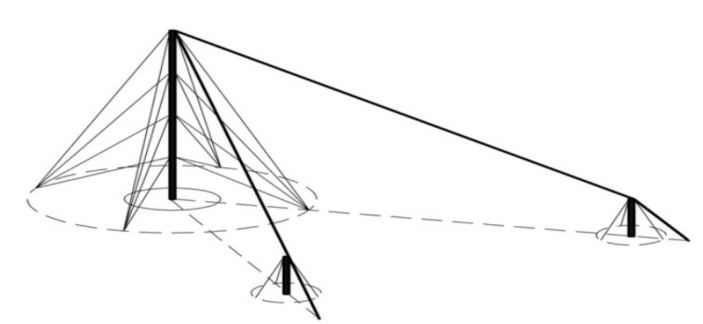
Конструкция не жесткая, собирается путем растягивания токопроводящих элемементов на кольях. Имеет смещение диаграммы направленности в стороны противоположную острию буквы V
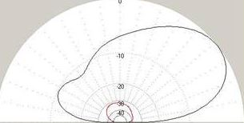
Применяется для связи в КВ диапазоне. Является штатной антенной военных радиостанций.
Также имеет название — антенна наклонный луч.
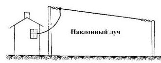
Представляет из себя наклонную растяжку, длина которой в несколько раз больше длины волны. Высота подвеса антенны от 1 до 5 метров, в зависимости от диапазона работы. Диаграмма направленности имеет ярко выраженный направленный лепесток, что говорит о хорошем усилении антенны.
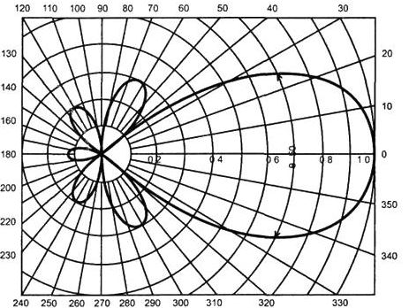
Широко применяется в военных радиостанциях в КВ диапазоне. В развернутом и свернутом состоянии выглядит так:
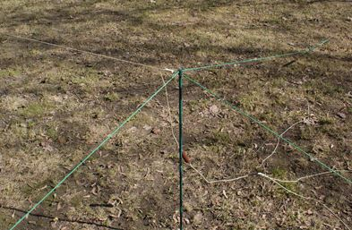
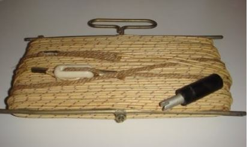
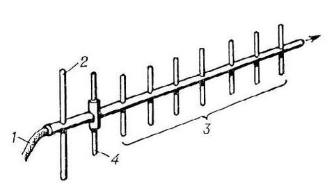
Здесь: 1 — фидер, 2 — рефлектор, 3 — директоры, 4 — активный вибратор.
Антенна с параллельными вибраторами и директорами, близкими к 0,5 длины волны, расположенными вдоль линии максимального излучения. Вибратор — активный, к нему подводятся ВЧ колебания, в директорах, наводятся ВЧ токи за счет поглощения ЭМ волны. Расстояние между рифлектором и директорами подпирается таким образом, чтобы при совпадении фаз ВЧ токов образовывался эффект бегущей волны.
За счет такой конструкции, антенна имеет явную направленность:
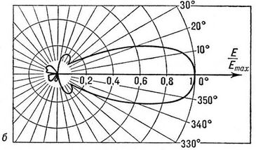
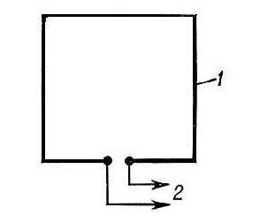
Направленность — двулепестковая
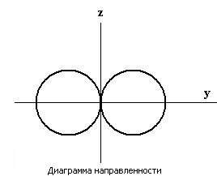
Применяется для приема ТВ программ дециметрового диапазона.
Как разновидность — рамочная антенна с рефлектором:
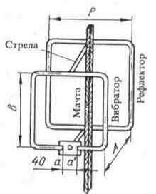
Свойства усиления большинства антенн сильно меняются в зависимости от длины волны. Одной из антенн, с постоянной диаграммой направленности на разных частотах, является ЛПА.
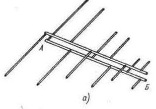
Отношение максимальной к минимальной длине волн для таких антенн превышает 10 — это довольно высокий коэффициент. Такой эффект достигается применением разных по длине вибраторов, закрепленных на параллельных несущих. Диаграмма направленности следующая:
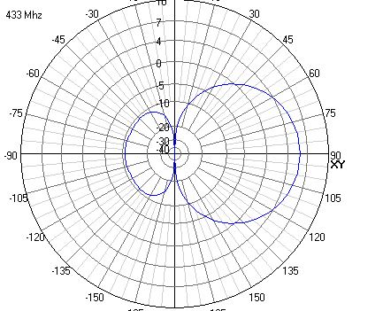
Активно применяется в сотовой связи при строительстве репитеров, используя способность антенн, принимать сигналы сразу в нескольких частотных диапазонах: 900, 1800 и 2100 МГц.
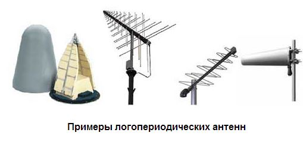
Поляризация — это направленность вектора электрической составляющей электромагнитной волны в пространстве. Различают: вертикальную, горизонтальную и круговую поляризацию.
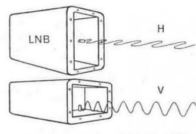
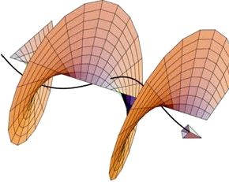
Поляризация зависит от типа антенны и ее расположения. К примеру, вертикально расположенный несимметричный вибратор, дает вертикальную поляризацию, а горизонтально расположенный — горизонтальную.
Антенны горизонтальной поляризации дают больший эффект, т.к. природные и индустриальные помехи, имеют в основном вертикальную поляризацию. Горизонтально поляризованные волны, отражаются от препятствий менее интенсивно, чем вертикально. При распространении вертикально поляризованных волн, земная поверхность поглощает на 25% меньше их энергии.
При прохождении ионосферы, происходит вращение плоскости поляризации, как следствие, на приемной стороне не совпадает вектор поляризации и КПД приемной части падает. Для решения проблемы, применяют круговую поляризацию.
Все эти факторы факторы следует учитывать при расчете радиолиний с максимальной эффективностью.
Данная статья обрисовывает лишь небольшую часть антенн и не претендует на замену учебнику антенно-фидерных устройств.